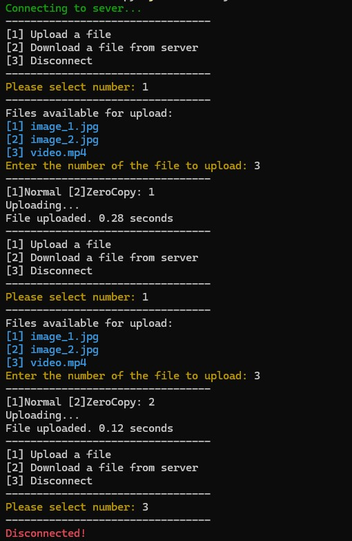
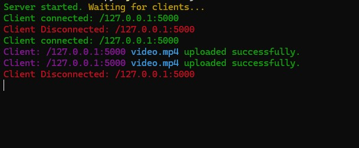

File Transfer System
A multi-threaded client-server application written in Java that demonstrates file upload and download mechanisms. It provides a side-by-side comparison between Normal Buffer-based I/O and Zero-Copy I/O to maximize throughput and minimize CPU overhead.
Features
- Multi-Threaded Server: Handles multiple concurrent client connections using standard Java threads.
- Zero-Copy File Transfer: Leverages Linux/Unix kernel optimization.
- Normal Buffer-Based Transfer: Traditional buffer-based data streaming (4 KB chunks).
- Interactive CLI UI: User-friendly command-line interface featuring ANSI color-coded logs, dynamic server file indexing, and execution time tracking (in seconds).
- Smart Extension Handling: Automatic detection and management of target file extensions during downloads.
System Architecture
1. Normal I/O Mechanism
Data travels across four context switches and multiple buffer copies between kernel space and user space:
Disk -> OS Kernel Buffer -> User-space App Buffer -> Socket Buffer -> NIC Buffer
2. Zero-Copy I/O Mechanism
Bypasses the user-space application memory entirely, utilizing direct DMA (Direct Memory Access) transfers:
Disk -> OS Kernel Buffer -> Socket Buffer / NIC Buffer
Application Interface Screenshots
Client Side Performance Comparison
The image shows the difference in uploading a 57.62 MB video: Normal I/O takes 0.28 seconds, while Zero-Copy I/O takes 0.12 seconds (measured on the same local network).

Server Side Status
Displays the connected IP addresses and their respective file transfer statuses.
